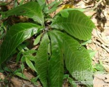

走马胎

拼音
Zǒu Mǎ Tāi
别名
血枫、山鼠、山猪药、走马风
来源
为紫金牛科紫金牛属植物大叶紫金牛Ardisia gigantifolia Stapf，以根叶或全株入药。秋季采挖根、全株，洗净切片晒干。夏季采叶，晒干。
生境分布
生于林下、山谷或溪旁等潮湿处。分布广西、广东、江西、福建等地。产广西、广东等地。
药材特点
走马胎，又名：走马藤、大叶紫金牛。 常绿小灌木。根茎呈念珠状，膨大，粗壮。叶通常集于枝端，纸质；叶片长椭圆形或长圆状披针形，长20～40厘米，宽达13厘米，先端渐尖，基部渐狭而成一短柄。边缘有细锯齿，下面红色。圆锥花序顶生；花淡紫色；萼片5裂，裂片近三角形；花冠5深裂，裂片卵形至广卵圆形，长约3毫米；雄蕊着生于花冠管的基部；子房上位，花柱线形，浆果圆形，熟时红色，具细长的果柄。花期4～7月。果期10～12月。 本植物的叶（走马胎叶）亦供药用，另详专条。
性状
干燥根茎呈圆柱形，常膨大呈念珠状，径1.5～4厘米，表面灰褐色至暗紫色，有纵向沟纹，皮部易剥离，厚约2毫米。质坚硬，断面皮部淡紫红色，有紫色小窝点，木部白色。加工的切片，斜切呈长椭圆形，厚约2毫米，皮部与木部分离，木射线清晰。有时掺入茎基部的切片，中央有淡红紫色的髓部。以干燥，念珠状、皮色紫褐多皱缩、断面有菊花纹者为佳。
性味
苦、微辛，温。
功能主治
祛风呼吸，消肿止痛。根：用于风湿性关节炎，腰腿痛，跌打肿痛；叶：外用治扭伤，痈疖肿毒，慢性溃疡。
用法用量
根0.3～1两；根、叶外用适量，捣烂外敷，或用干叶研粉撒敷患处。
化学成分
无化学成分数据
药理作用
1：无药理作用数据
摘录
《全国中草药汇编》